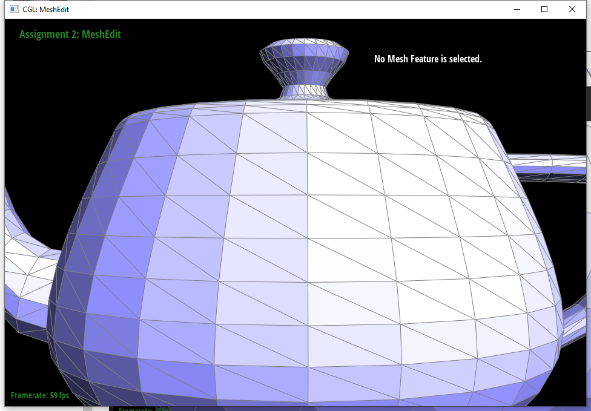
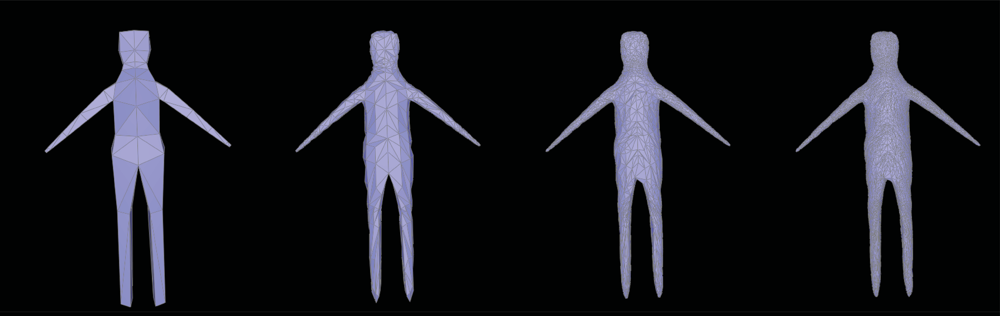

Project 2: Mesh Edit
CS 284a Computer graphics & Imaging
2022 Spring Kaleab Belete, Xinwei Zhuang Webpage: https://cal-cs184-student.github.io/sp22-project-webpages-xinwei-zhuang/proj2/index.htmlPart 1: Bezier curves with 1D de Casteljau subdivision
Briefly explain de Casteljau's algorithm and how you implemented it in order to evaluate Bezier curves.The basic steps for this part are:
1) If only one point is sent in for evaluation return the given point.
2) Otherwise use push_back and LERP the given list of points using the "(1-t)p_i+tp _i+1" equation and return a new list of larped points.
Take a look at the provided .bzc files and create your own Bezier curve with 6 control points of your choosing. Use this Bezier curve for your screenshots below.
see bzc/curve3.bzc
Show screenshots of each step / level of the evaluation from the original control points down to the final evaluated point. Press E to step through. Toggle C to show the completed Bezier curve as well.
Show a screenshot of a slightly different Bezier curve by moving the original control points around and modifying the parameter t via mouse scrolling.
Part 2: Bezier surfaces with separable 1D de Casteljau
Briefly explain how de Casteljau algorithm extends to Bezier surfaces and how you implemented it in order to evaluate Bezier surfaces.1) The evaluate function loops through the 3D list of control points and make a 2D list of new points by calling evaluate 1D on each sublist in controlPoints using u for our t value. Then with the new list of points, call evaluate 1D one last time with v as our t to get the final output on the bezier surface patch over (u, t).
2) In the evaluate1D function if only one point is sent in for evaluation return the given solo point otherwise recursively call the function reducing the points each step using the evaluate step function to get the final intermediated output.
3) In the evaluateStep function if only one point is sent in for evaluation return the given point otherwise use push_back and LERP the given list of points using the "(1-t)p_i+tp _i+1" equation and return a new list of larped points.
Show a screenshot of bez/teapot.bez (not .dae) evaluated by your implementation.
Part 3: Area-weighted vertex normals
Briefly explain how you implemented the area-weighted vertex normals.The basic steps for this part are:
1) Create a vector to hold areaWeightedAverage and a HalfedgeCIter h pointing oppsite the vertex then flip it with twin.
2) Make an hInit value to store the current h and use a do while loop until h becomes hInit, process each vertex by accumulating the cross product.
3) Process each step by accumulating the cross product of the vertex position - position and the next twin(set h to its next twin) vertex position - position(flip the cross product).
3) Return the unit normal of the areaWeightedAverage.
Show screenshots of dae/teapot.dae (not .bez) comparing teapot shading with and without vertex normals. Use Q to toggle default flat shading and Phong shading.

Part 4: Edge flip
Briefly explain how you implemented the edge flip operation and describe any interesting implementation / debugging tricks you have used.This part was a bit more tricky and required planning before direct implementation. The method that worked here was to draw out a mini diagram and lable all the halfedges, verticies, faces, and edges then manually flip an edge in the diagram keeping track of all the things that would change after a flip. After a few flips and analyzing the edge cases the basic logic for flipping was clear and it was only a matter of implementation.
In the code the basic steps are:
1) If there given edge is a boundry edge return the given edge.
2) Otherwise, there is a setup stage where the elements of the diagram are initalized and the basic relationship is setup.
3) Afterwords, the relationships are updated using the initalized variables with either set neighbor or direct assignment.
Show screenshots of a mesh before and after some edge flips.
Write about your eventful debugging journey, if you have experienced one.
The debugging was done on paper while writing out the solution, there were no major bugs that required using the C++ debugging tools.
Part 5 Edge split
From a edge, we split the two adjacent mesh by the diagram showed below. Because there are so many pointers, we made all pointer explicit, even those who are unecessary.
Results
A mesh before and after some edge splits

Debugging journey...
After first thought that it might be easy to have bugs in the pointers and reinitiation, (after half an hour) it turns out to be the position of new vertex is calculated with the wrong index...Boundary edges
A mesh before and after some edge splits
Part 6 Loop subdivision for mesh upsampling

New vertex = 3/8 * (A + B) + 1/8 * (C + D)
Old vertex = (1 - n * u) * original_position + u * original_neighbor_position_sum

observations
After subdivision, hte sharp corners are smoothed out, and has a tendency to become a sphere shape if the topology is sphere and becomes a donut if the topology is circle.
asymmetric cube
For the cube case, it becomes slightly asymmetric after several subdivisions. This is due to the non-uniform mesh construction. It can be fixed by preprocessing the cubes with edge splits. Below is the demon for the mesh processing, the original mesh subdivision, and the preprocessed mesh subdivision. The preprocessed cube shows no more assymetric shape.
preserve edge
By performing similar splitting stretegy to the cube we can make the cube also reserve some edge.
Part 7: Design and edit your own mesh!
mesh refine:We used mirror modifier to make the model symmetrical. We used scale face to make the torsso, arms and legs more realistic, and use scale + rotation to add some details such as shoulder.

Bugart